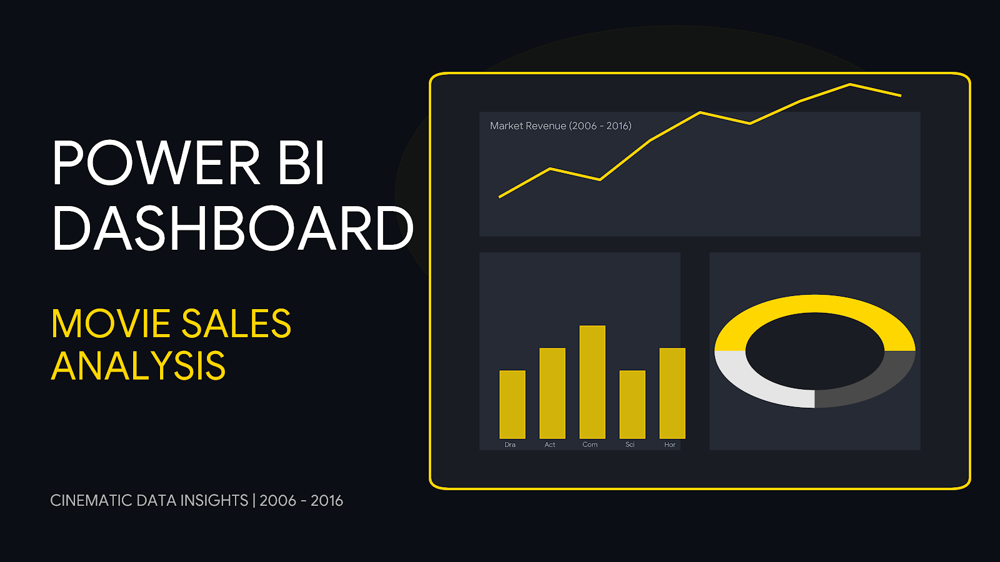
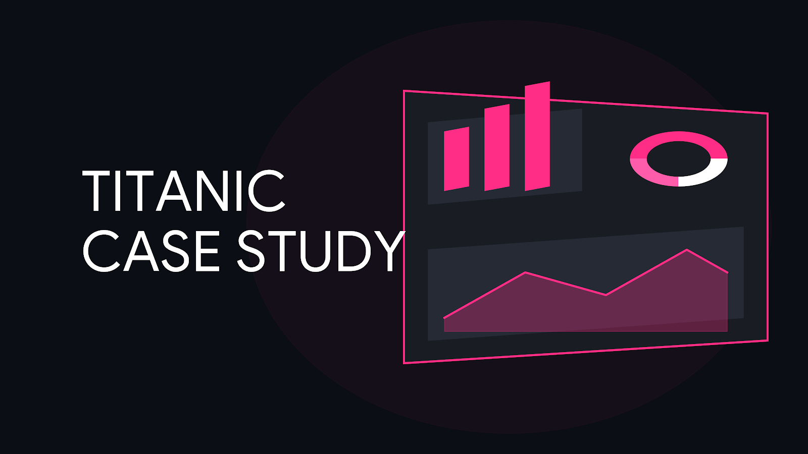

Movie Sales Analysis
Box-Office RevenueThis project analyzes a dataset of 1,000 movies from 2006–2016 to uncover key drivers of box-office success across various genres and runtimes. Using Power BI, the dashboard visualizes a $72.3B market to identify how viewer preferences and production volume have shifted toward shorter, high-revenue action and adventure films.
See My Work
Titanic Passengers
Case StudyA deep-dive data study of the 1912 Titanic disaster. This project analyzes a dataset of 891 passengers to uncover the socio-economic and demographic factors that determined survival, featuring an interactive dashboard built in Power BI.
See My Work